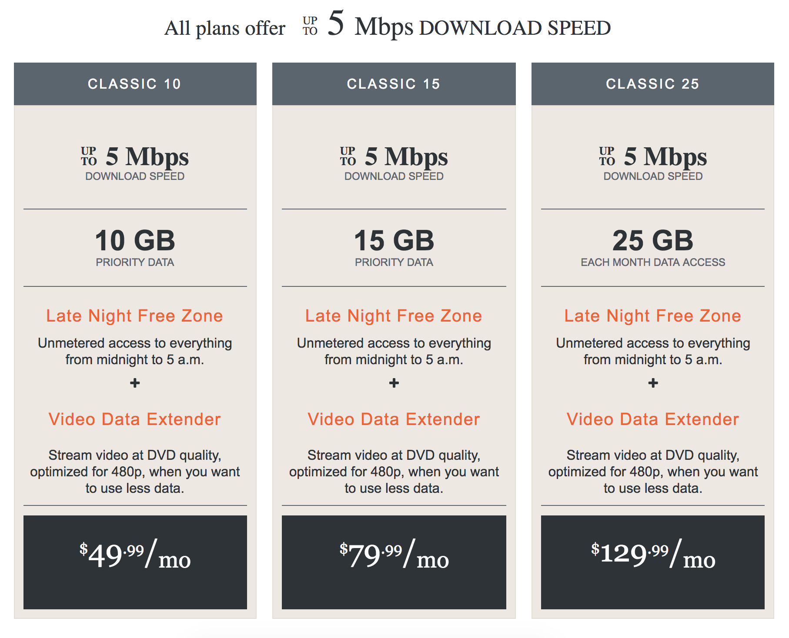
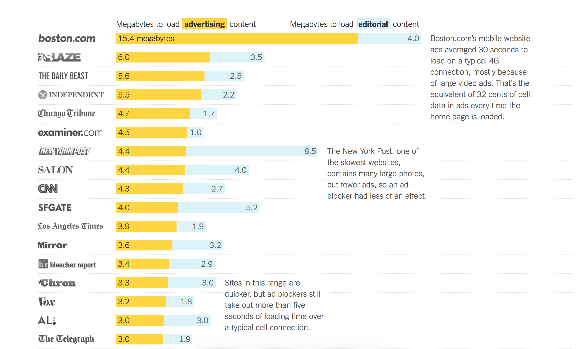

Logging off: Improving Low-Connectivity Experiences on the Web
Hello and welcome to my talk on improving low-connectivity experiences
on the web. I'm Valerie Woolard Srinivasan, I work as a software engineer
at Panoply, and I'd be happy to offer podcast recommendations if you catch
me in the hallway later. But first I want to talk a little about the internet.
The Internet!
73% of adults in the United States have high-speed internet access at home
10% of Americans lack access to broadband, 39% in rural areas
12% of Americans have smartphones but no broadband, 27% of people making under $30k
54% of households worldwide have internet access
facts via Pew Research Center, FCC, and ITU
We all love the internet. We've wasted many hours online. I'm willing to guess
that most people in this room have access to a reliable internet connection on
a regular basis, whether that's at home, at work, or both. The FCC defines high speed
internet as a connection with a speed of 25 megabits per second or higher.
As of a year ago, 73% of adults in the United States had high-speed internet
access at home. That's a good percentage, but it still leaves out a lot of people.
According to the FCC, 10 percent of Americans lack access to broadband. That is,
it's not available to them to purchase. This can be especially pronounced in rural areas.
In rural areas, 39 percent of people lack access to broadband. 20 percent of people in
rural areas lack access to internet speeds of at least 4 megabits per second, which is
more than 5 times slower than what is officially considered "high-speed." 41 percent of
people living on tribal lands lack high-speed internet access, 66 percent of people living
in US territories, and 98 percent of people living in rural areas in US territories.
Twelve percent of adults don't have high speed internet but do use smartphones. Twenty-one
percent of adults making under $30,000 a year fall into this category.
And we're just talking about the United States here. High speed internet is, of course, not
at all equally distributed throughout the globe. The International Telecommunication Union
2017 report estimates that 53.6 percent of households worldwide have internet access, only
42.9 percent in developing countries, 14.7 percent in least developed countries, and 84.4
percent in developed countries.
So, perhaps it goes without saying that the more forgiving your applications or websites are
to people who have slow or limited internet access, the more people will be able to use them,
opening up additional possibilities for viewers or customers from around the globe.
It's also worth noting the regional and economic variations in internet accessibility, and
keeping in mind that internet speed could be a hurdle to people in lower income brackets or
from rural areas using your site.
These facts are all via the Pew Research Institute, the Federal Communications Commission, and
the International Telecommunication Union, which is an agency of the United Nations. I'll have
links in the presentation when I post it which I'd encourage you to dig into more if you're
interested.
Types of limited-connectivity users
Intermittent connection
Slow connection
Bandwidth-limited connection
Sporadic (time-limited) connection
Let's talk about the different types of ways people can be internet-limited.
People may fall into multiple of these categories, and they may not be
permanent or apply to all of the ways in which a person accesses the
internet.
First, there's the intermittent connection. This could be a fixed internet
access point that is unreliable due to service providers or weather. It
could also be a user who is using their phone to access the internet on
the metro and going in and out of service areas. In these cases, the phone
or computer may even think it is connected to a network, but packets are not
actually being delivered.
Next, there's the slow connection, where a reliable connection exists, but it
may be much slower than what we're used to, making it difficult to load websites
with lots of rich content or background scripts.
There's also the bandwidth-limited connection, which again we're probably much
more familiar with on our phone, but also exist on home internet plans. Some
users may be limited to a certain number of gigabytes of data use a month,
making them have a much higher awareness of how much bandwidth their internet
use habits are actually consuming.
Some people may also have sporadic or time-limited connections, which I've
differentiated from intermittent connections in that they are more predictable,
such as a person who only connects to the internet when at work or a library,
but may want to save or cache content for use later.
For example, here's a picture taken near my parents' house. As you might guess, they are part
of that statistic that lacks access to high speed internet. There are no fiber or DSL lines up
here. What there is is a clear view of the southern sky, so they get satellite internet with a top
speed of 5 Megabits per second for probably more than some of you pay for your much cushier plans.
To top it off, they also have bandwidth caps that limit their total data usage to 10 gigabytes a
month.

Here's a full list of the internet plans from an internet provider available for my parents'
zip code. You'll notice that the top download speed is 5 megabits per second, which is much
lower than the 25 megabits per second required for the FCC's classification of high-speed.
You'll also notice that all of the plans have fairly low bandwidth limits, if you consider
that streaming a movie can easily consume a gigabyte of data.
My phone tracks data usage over wifi, and I looked for the last 30 days, and I had used 15
gigabytes of data just on my phone in the last month, with 7 gigabytes of that in my podcast
app. So, the bottom plan here would be sufficient for just my podcast needs on my phone. If
I wanted to be able to support all of the other idle browsing I do on my phone I would need
the middle plan. That's before you even get into the data I use on my other devices.
But... unlimited data usage from midnight to 5 a.m., so you can get all your downloading done
then. The limitiations of this plan fall into three of the categories that I mentioned in
the earlier slide. It is slower than we're all used to, it is bandwidth-limited, and it is
time-limited, in that there is a time window where it's advantageous to get most of your data
transfers done.
So with these constraints in mind, let's continue.
Zoiks!

This is from a story that the New York Times did in August on 2015 entitled "The Cost of Mobile Ads
on 50 News Sites." It was focusing on the cost of loading these sites to mobile users, both in terms
of literal cost on their phone plans and money. But, as we've seen, a lot of the challenges that
apply to mobile internet usage are also relevant to other limited-connectivity users.
It found that most news sites took longer to load ad content than editorial content, in some
egregious examples up to 3 times longer.
Given that these sites rely heavily on advertising for their revenue, it does not seem like a good idea
for their ad scripts or content to reduce speed to such a level that it incentivises users to install
adblockers. This is an important point to consider also as we consider advertising within our projects
and the larger question of whether the costs to the user of viewing or using our content is being spent
in loading content that is integral to what the app does or whether it is added features, fun, or polish.
If the things that we're making users load aren't essential, are we giving them a way to opt out of them.
Ways to help
Structure pages by priority
Quit it with the autoplaying videos already
Use UI signals for high-bandwidth activities (downloads, videos)
Cache smart
Keep pages small
More tips: http://www.aptivate.org/webguidelines/TopTen.html
This company Aptivate, which does international web development, has
a website with lots of guidelineson how to better structure your
content for low-bandwidth connections, and a lot more detail on how
to implement some of these suggestions.
Some of the ways that you can help build low-bandwidth friendly
sites is to structure your pages inorder of priority. That is, the
most important information and content should be high up on the page,
so that it is loaded first, in the case where the whole page might
not load right away.
Another suggestion is to signal and allow people to opt out of
high-bandwidth portions of your site. From both a bandwidth and a
user experience perspective, there's no reason for you to have
autoplaying videos, for example. Users should know any time they're
about to download a file, use little download symbols, and indicate
the file size if possible.
It should be clear to users when they're about to start playing a
video or stream. Which again, should never ever autoplay.
Also try to optimize your caching by getting familiar with what
cache headers you're setting, and trying to avoid users having to
refetch content if it hasn't changed.
Lastly, but perhaps most importantly, keep pages small to begin
with. Scale down images. Store CSS in external stylesheets instead
of inline, avoid PDFs whereever possible and embed that information
in aweb page. This company recommends a maximum page size of 25kb,
with the rationale that such a page would take 10 seconds to load
over a 20 kilobit per second connection, but that's pretty small.
I tried measuring the size of a couple pages in Chrome dev tools,
and they were at least a couple hundred kilobytes, and plenty went
into the megabytes.
The network tab on Chrome dev tools can help with profiling this,
if you disable the cache and load a page it'll give you the total
size of the data tranferred. Google's page speed insights can also
take a URL and give suggestions for how to make that page faster.
This site that I've linked at the bottom here also has links to
tools to optimize the JS and CSS that you're using to increase
page speed. It also has a low-bandwidth simulator, so you can
get an idea of how low-bandwidth users might be experiencing your
site.
Your Faves
JQuery : 85 kbBootstrap : 50 kb (JS), 125 kb (CSS)Angular : 164 kbD3 : 216 kb
In light of that recommendation that pages be no larger than 25 kilobytes,
let's look at some common libraries.
JQuery clocks in at 85 kilobytes. Bootstrap's JS is 50 kilobytes while its
CSS is another 125 kilobytes. Angular is 164 kilobytes and D3 is 216
kilobytes.
Of course these are necessary parts of lots of sites for various reasons,
but it's worth being aware of the cost of these inclusions, especially
as we consider that these are before we get to the size of any of the
actual content on the site, and the cost of including these libraries
for bandwidth-limited users.
Offline First
The ideas we've talked about so far are helpful for people with slow
internet connections or limited bandwidth, but what about the separate
issue of an unreliable internet connection, or one that says it's
connected but isn't?
There's a growing movement toward offline first development, which
assumes that a user does not have a connection and serves from a cache,
and if there is a connection, updated information can be fetched and
rendered.
Email clients were probably some of the first applications to use this
sort of model. Even if you aren't connected, you can see the messages
downloaded from the last time you were online. You can even write messages
that are queued up to be sent the next time that you have a connection.
This paradigm can also be applied to your sites and webapps. Several
tools are available, such as service workers, remote storage, and
hoodie, to make the process of developing offline-first easier.
The idea of offline-first is especially helpful to mobile users and
others who might not be able to predict when they'll lose connection.
Adding additional UI signals, like Google Drive's "Make Available
Offline" option can be especially helpful in these scenarios.
Online you'll find lots of resources around offline first and how to
start using it. I highly recommend the article "Designing Offline-First
Web Apps" on A List Apart as a primer on the topic and some of the
best practices and ideas around it, as well as resources on how to
contribute your ideas and learn more. The big idea is that being
offline is normal, and something that should be treated as such rather
than just throwing an error or exception.
The Big Picture
"It's really easy [...] to
always want to be on the cutting edge, always working on the coolest
technology, but we have to remember that that's all privileged in many places"
Aaron Williams, a graphics reporter at The Washington Post
So before we part ways I want to talk a bit more about why I think this topic is
important. This quote is from a story on limited connectivity users, primarily those
using only a phone, and their access to news sites. As you can imagine, as capabilities
improve to make the most complex infographics with the most flashy and iteractive features,
keep in mind the users that you may be leaving behind as you make those choices.
"It's really easy to always want to be on the cutting edge, always working on the
coolest technology, but we have to remember that that's all privileged in many places."
From a pure business perspective, the best way to reach more customers is to make your
product available and useful to more people. If your product, website, or app has a
billion possible users, chances are good that some of them will be in the groups we
talked about earlier who have limited internet access, be that due to geographic limitations,
economic limitations, or some combination of the two. It's also worth remembering that
constant and reliable internet connectivity is a privilege, and that by leaving out
those who don't have it, we're leaving out a specific segment of the population, largely
rural and/or low income.
In the last year, we've been involved in a very heated exchange
around the internet's role in shaping our country, our politics,
and our poliicies. As we come to rely on the internet more and more
in our daily lives, both in our logistics and our decision-making,
we need to be aware of the consequences that making our tools and
information inaccessible to low-connectivity users has. Access to
legitmate news sources was a huge issue in the last election, and
one that is likely to continue to loom large as time goes on.
We looked specifically here at news sites and the toll that
advertising scripts can take on low-connectivity users. If those
users aren't able to load legitimate news sites, then we
have a huge problem. If services, applications, or tools are
similarly unavailable to that group, we have a huge problem.
Think about this and your responsibilities in this system as you
develop websites and design tools for the future.
Go forth and conquer
I hope that this has given you some perspective on the world of
limited connectivity on the web and given you some steps that you
can take to improve the accessibility of what you build for
limited-connectivity users.
If nothing else, I hope I have convinced you to never ever use an
autoplaying video, and if that is all I've done I consider it a
success.
Feel free to find me later or on Twitter with any questions, and if
you're interested in working for my company, Panoply, we are hiring
and I'd be happy to chat about that as well.
Go forth and conquer!
@valeriecodes